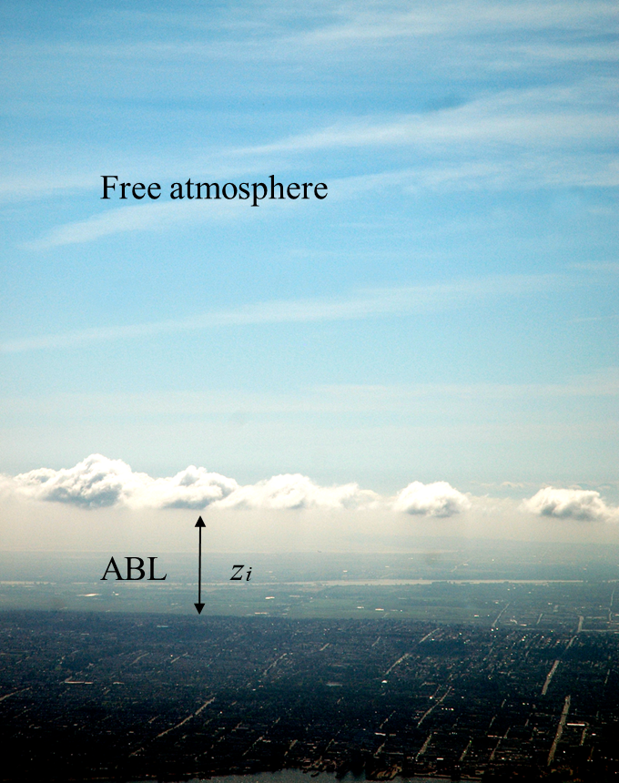
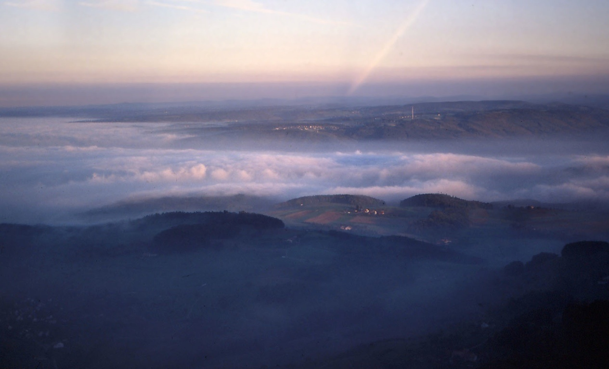
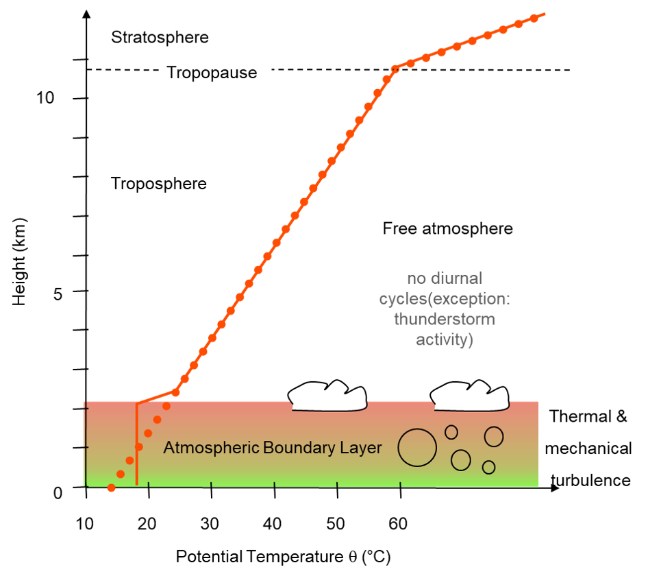
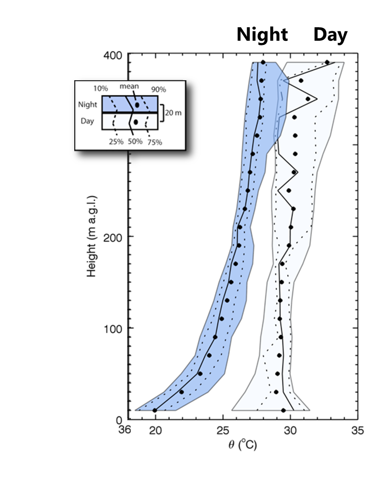
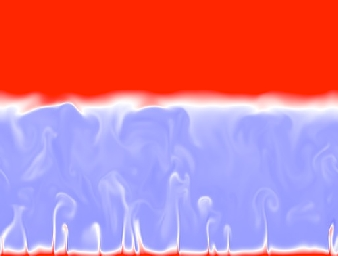
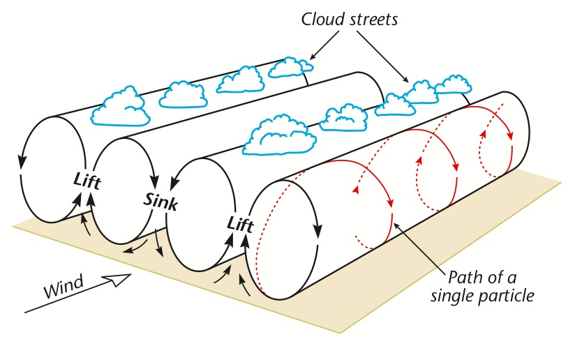
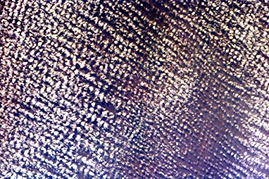
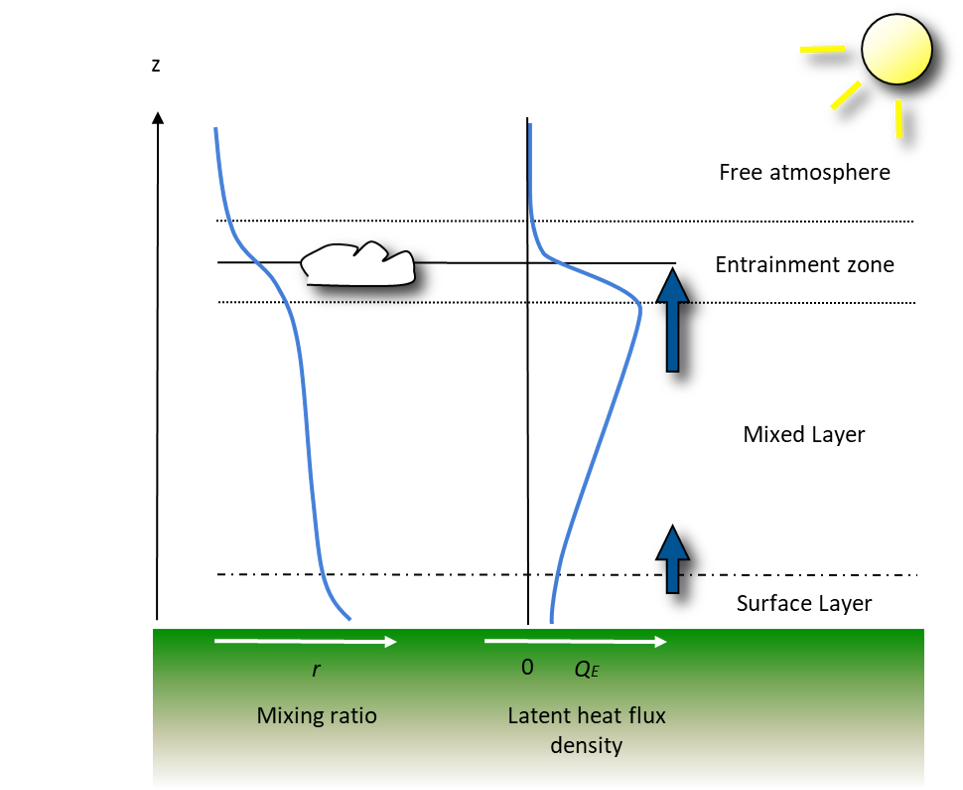
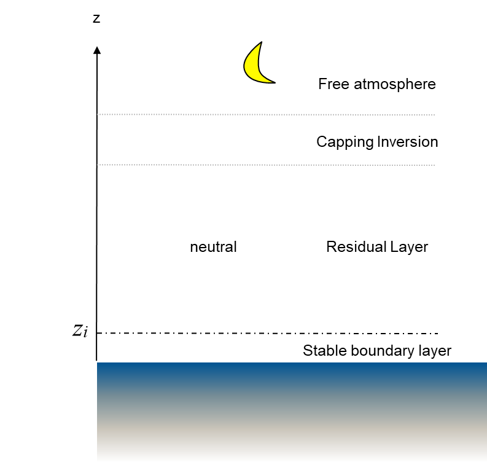
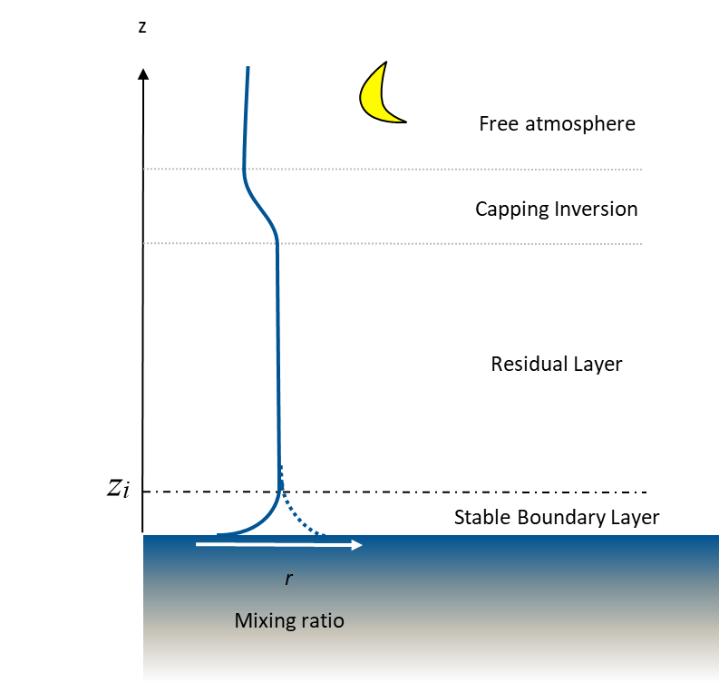

The final exam will be open between April Wednesday April 24th and Thursday April 25th. It will be completed asynchronously over canvas.

Name the layer of the atmosphere from the surface to the level where the frictional influence of the surface is absent.



The upper boundary of the ABL (\(z_i\)) can vary substatially over the course of a day.
Diurnal Course of \(\theta\) and \(r_{CO_2}\) over Vancouver
In the convective boundary layer (CBL) apart from mechanical convection close to the surface, turbulence is driven mainly by thermal convection.

Thermals from CBL overshoot into capping inversion at \(z_i\).
Acceleration due to buoyancy causes thermals to penetrate some distance up into stable layer, where they are repelled and returned to upper mixed layer.
Note, ABL growth is due to both, ‘encroachment’ from surface and ‘entrainment’ from free atmosphere above.



Above the stable boundary layer at the surface, weak mixing continues in remnants of previous day’s CBL, called the residual laye.

In the stable boundary layer surface cooling causes downward sensible heat flux.
Potential temperature profile defines the depth of the stable boundary layer, but may be hard to identify top (merges) - typically 100 - 300 m on a clear sky night.
